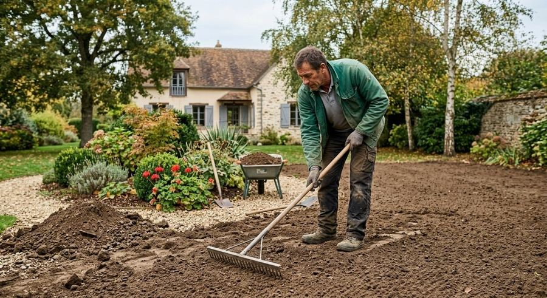
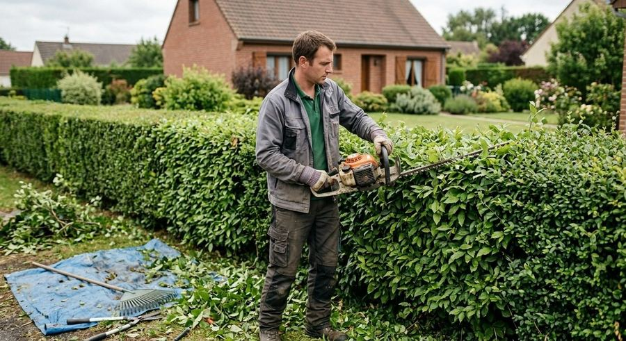
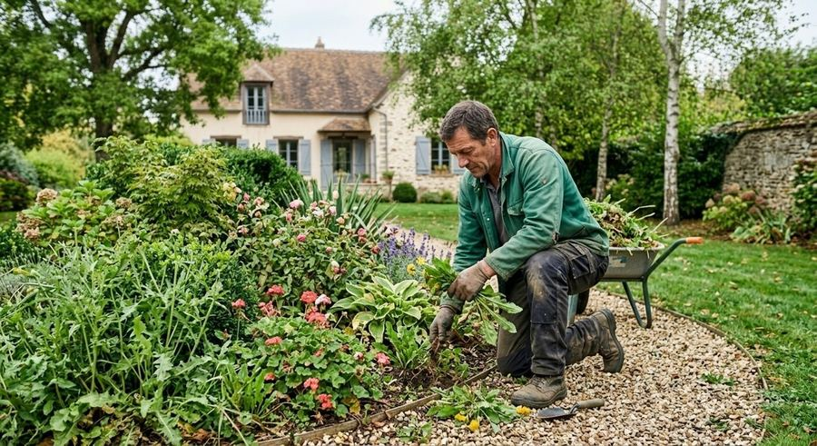
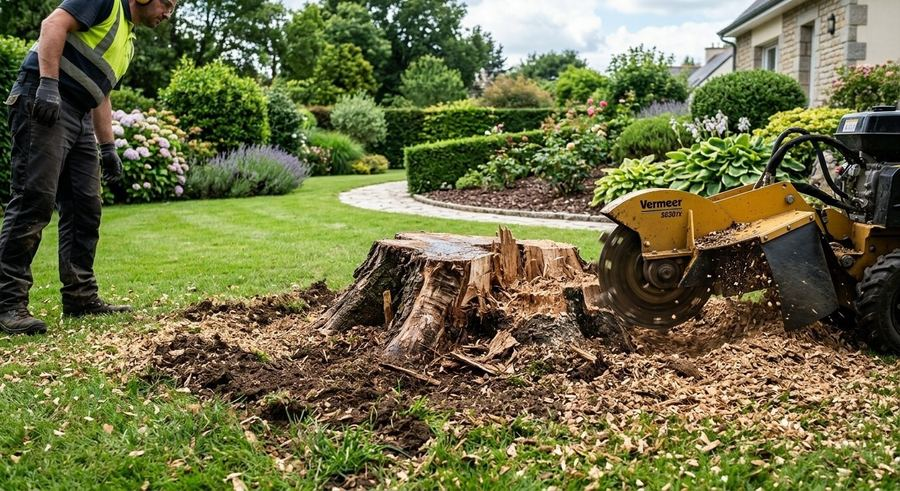
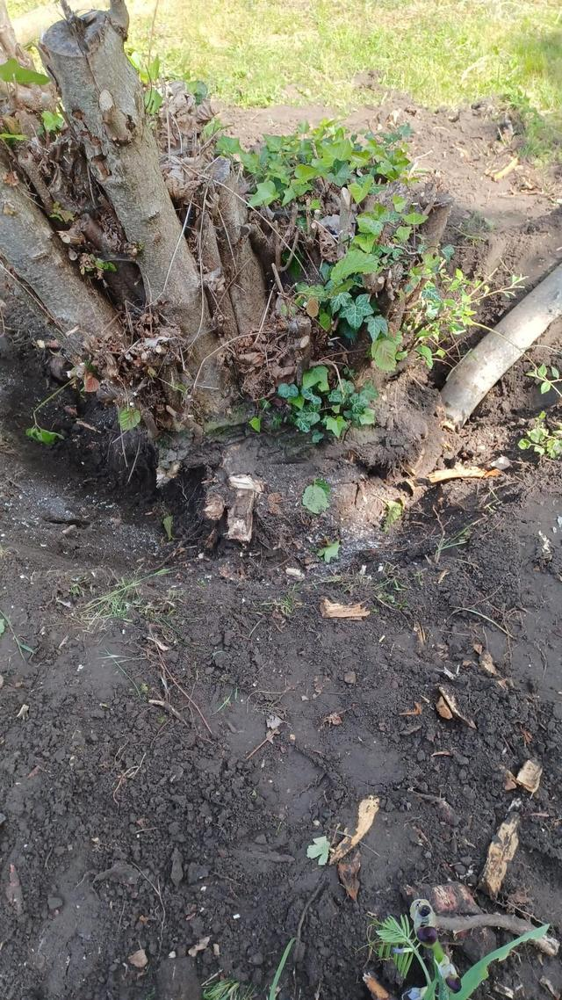
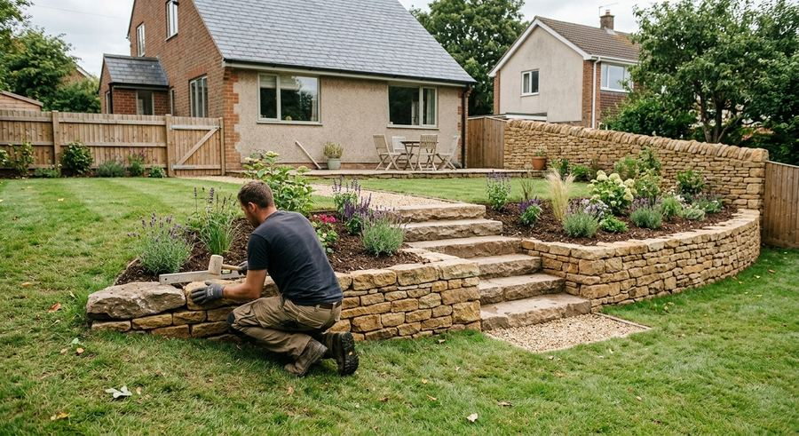
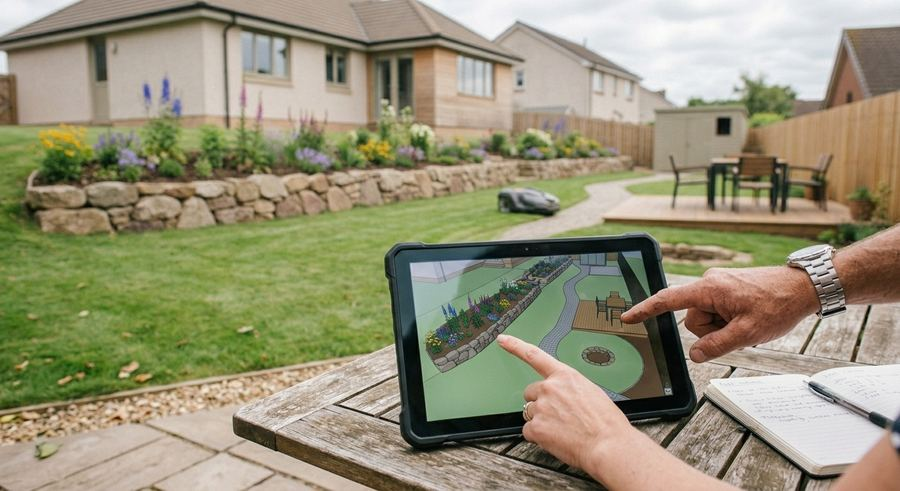

Services
Un jardin créé, entretenu et aménagé
Création de massifs et de pelouse, entretien, taille, élagage, abattage et petits travaux : tout se règle avec Andrei.


Créer
Massifs, pelouse et plantations
Un jardin imaginé selon vos envies, planté et engazonné : massifs, fleurs, arbres, arbustes et haies.
- Création de massifs
- Semis de pelouse
- Gazon en rouleaux
- Plantation de fleurs, arbres, arbustes et haies


Entretenir
Un jardin suivi toute l'année
Le suivi régulier qui garde pelouse, haies et massifs en forme.
- Tonte de la pelouse
- Désherbage et arrosage
- Taille de haies, rosiers et arbustes
- Ramassage des feuilles
- Débroussaillage


Les arbres
Élagage, abattage et souches
Un arbre qui gêne, des branches indésirables, une souche à enlever : Andrei s'en occupe.
- Abattage et élagage
- Suppression des branches indésirables
- Arrachage des souches


Aménager
Petits travaux d'aménagement extérieur
Un savoir-faire polyvalent pour finir votre extérieur, de l'accès à l'abri de jardin.
- Accès, allées et terrasses
- Maçonnerie paysagère
- Clôtures
- Abri de jardin
- Peinture


Votre projet
Parlons de votre jardin
Décrivez à Andrei ce que vous souhaitez faire : il vous répond directement.
06 05 50 79 47